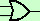

La somma in un'algebra di Boole puo' essere pensata come una coppia di interruttori in parallelo, cioe' tali che la corrente possa percorrere il primo ed il secondo cammino prima di ricongiungersi  infatti indicando con 1 il passaggio di corrente e con 0 il non passaggio avremo
Questo, sostituendo 0 con FALSO ed 1 con VERO corrisponde alla tavola di verita' per la disgiunzione inclusiva ti ricordo che, nell'algebra di Boole, posso chiamare gli elementi indifferentemente 0 ed 1 oppure F e V e questo ci permettera' di usare il computer oltre che per fare calcoli numerici anche per fare calcoli logici, con tutte le possibilita' che cio' offre
 Tale circuito in informatica viene detto porta logica or o semplicemente or ed e' tale che il valore in uscita e' 0 solamente se entrambe gli ingressi sono 0
Tale circuito in informatica viene detto porta logica or o semplicemente or ed e' tale che il valore in uscita e' 0 solamente se entrambe gli ingressi sono 0cioe' per avere l'uscita 1 deve essere 1 o il primo ingresso o il secondo oppure tutti e due per indicarla si usa il simbolo  |


|

|

|

|